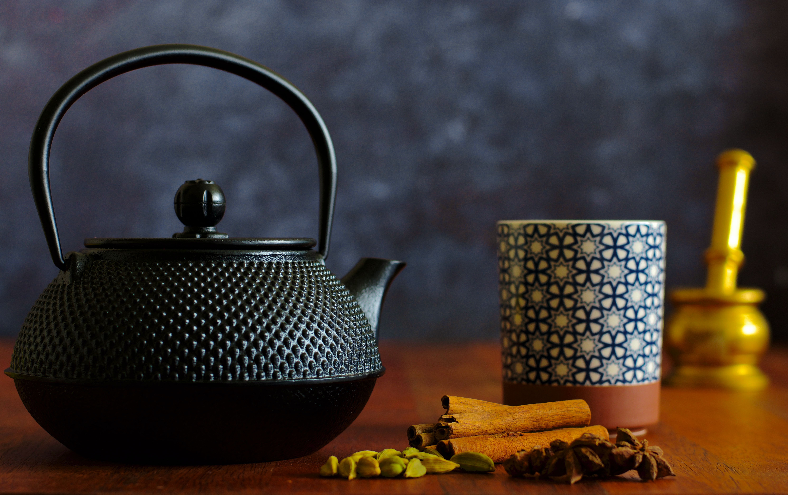

Masala Chai

Description
Masala Chai is a very popular drink in India and most Indians drink it every day for breakfast and during the winter and monsoon months. It is believed to keep the body warm and clears up blocked sinuses. Masala chai is a hot beverage made by simmering a mixture of spices with milk and tea. The recipe itself varies regionally, and each region of India has their own unique version of chai. This recipe will show you how to make traditional masala chai, the most commonly known type of chai.
Ingredients
- 1 teaspoon green cardamom
- 1/2 teaspoon cloves
- 2 1/2 to 3 grams cinnamon
- 1/4 teaspoon fennel seeds
- 1/4 to 1/2 teaspoon black peppercorn (1/2 tsp powder)
- 1/2 teaspoon grated nutmeg or 1/3 large nutmeg
- 2 petals star anise
Steps
- Clean all the spices and add to a blender jar. Blend until fine.
- Store spices in an airtight glass jar.
- Use about 1/2 teaspoon or more to make 2 servings of tea. For a stronger tea, use 3/4 teaspoon.
- To make the tea, pour water into a pot and add the tea. Bring to a boil.
- Once water is boiling, add spice blend and boil for about 2 to 3 minutes on a low to medium flame.
- Add milk and bring to a boil.
- Simmer until the tea darkens and turns thick, about 5 minutes. Simmer until the tea reduces to about 1 3/4 cups.
- Filter chai into serving cups.